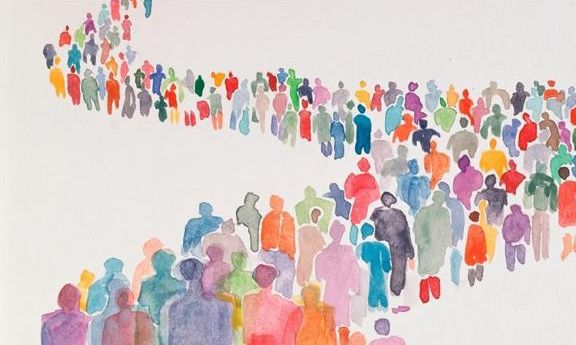
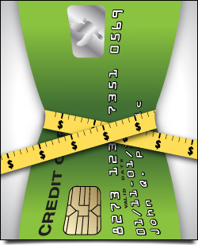
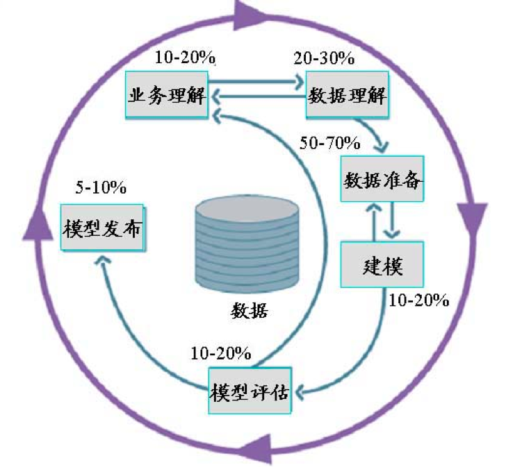
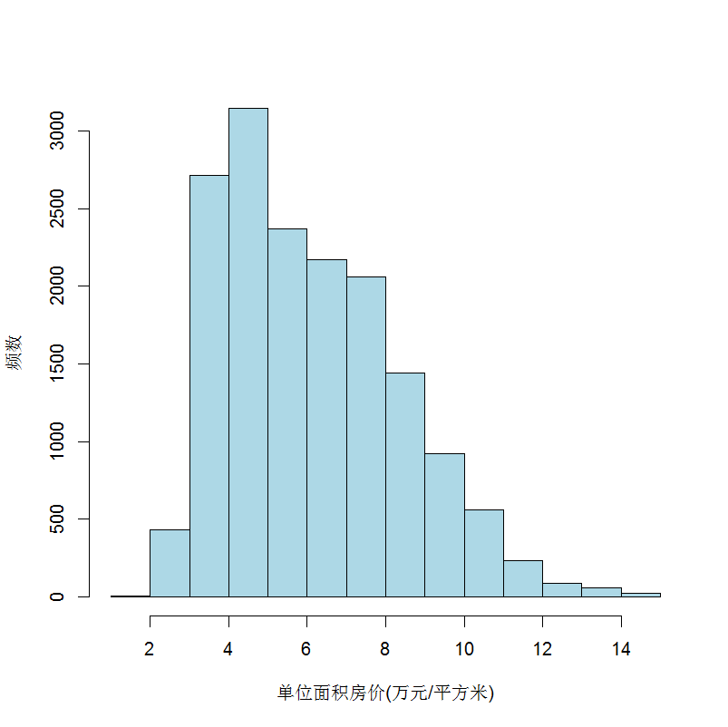
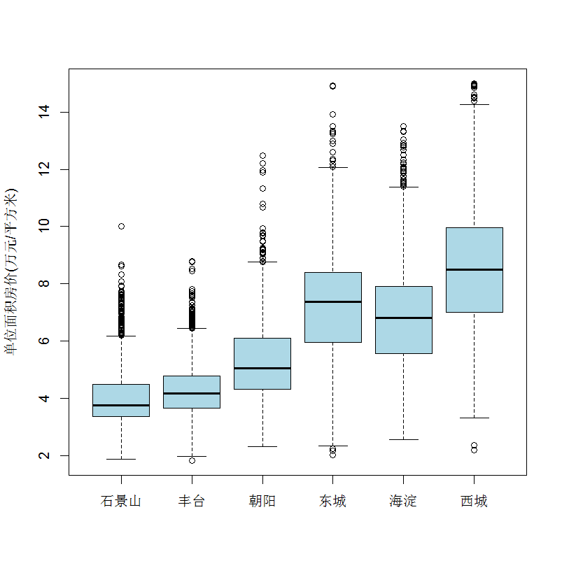
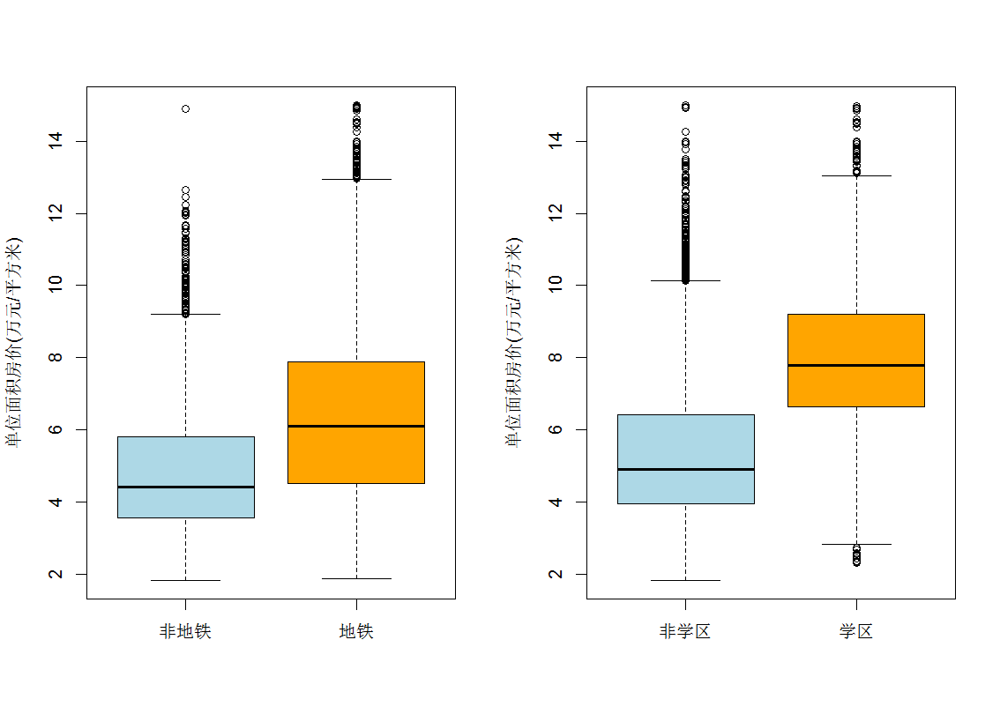
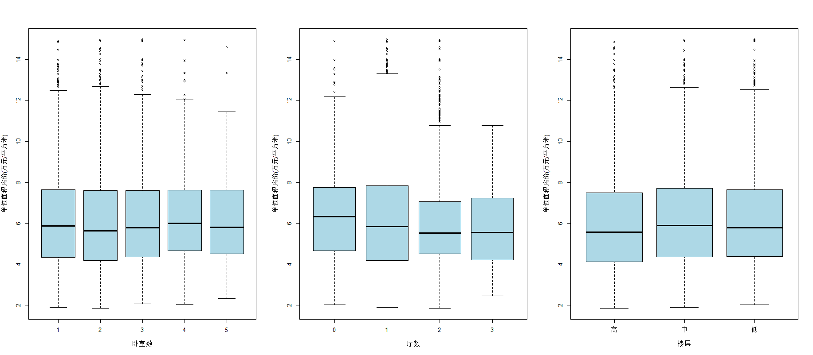
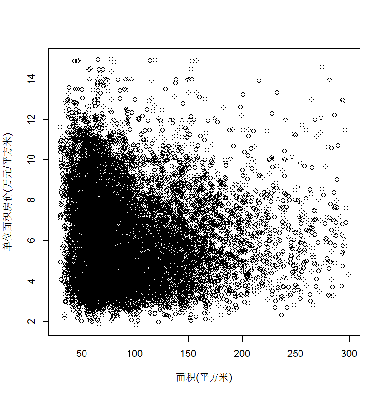
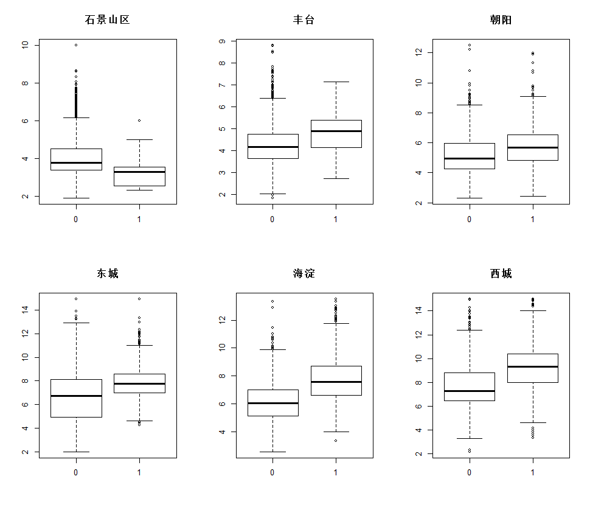

AI 2.0回归分析
把业务问题，
变成数据可分析的问题
本讲要回答四个问题
什么是
回归分析？
Y 是价值，X 是业务知识；回归研究二者的相关关系。
线性回归
怎么算？
最小二乘：让“平均而言”的误差最小。
它如何
解释房价？
北京 16210 套二手房：学区、地铁、城区各值多少钱。
回归之后
是什么？
回归五式；从“解释”走向“预测”，进入机器学习。
回归分析是什么
研究 X 与 Y 的相关关系
把业务问题定义为数据可分析问题！
相关 or 因果？
父母教育程度越高，
孩子教育程度越高

⇄粉丝数越多，
发帖数越多
风吹得越大，
雾霾越轻
回归先告诉你“一起变”；谁导致谁，要靠业务知识与研究设计来回答。
冰淇淋销量 ↔ 溺水人数
Y 是什么？价值！

客户流失
Y = 流失与否（0/1）

征信
Y = 是否逾期（0/1）
保险
Y = 赔付金额（连续）
价值，就是业务的核心诉求

收入
销售额 · 客单价 · 复购
支出
获客成本 · 赔付 · 运营成本
风险
违约 · 流失 · 欺诈
选对 Y，就是选对了这个模型要为谁、为什么服务。
X 是什么？业务知识！
客户流失
在线时长
活跃程度
朋友个数 …

征信
消费记录
工作背景
教育程度 …
保险
出险记录
驾驶习惯
汽车状况 …
业务问题 → Y 与 X
钱花在哪里，
销售才会涨？
Y：销售业绩 X：各渠道广告投入
回归系数 = 每多投 1 元，销售平均多多少，即各渠道的投资回报率（ROI）。
销售 = 基准 + β₁·央视 + β₂·百度 + β₃·腾讯 + ε
拖动滑块（单位：百万元）：系数为教学假设值，不是真实投放数据
其他条件不变时，把预算从低 ROI 渠道挪给高 ROI 渠道，预测销售上升。
某品牌轿车
客户价值分析
问题：客户对 4S 店，值多少钱？
方法：用回归找出哪些因素重要、有多重要。
客户价值 = 谁的价值？
Y = 客户保养价值（下一期保养花费）
Y：下一期的保养花费（连续）
X：来自三个层面的业务知识
回归结果 调整 R² = 36.37%
| 变量 | 估计值 | P 值 | 大小 |
|---|
读法：P 值小 → 该变量与 Y 的关系不太可能只是偶然；估计值 → 其他条件不变，X 多 1 单位，Y 平均变化多少。
看懂这张表，
要回答两件事
哪些变量重要？
车型？保养？里程？——靠显著性（P 值）判断“有没有”。
有多重要？
估计值是多少？误差多大？——这正是线性回归精要要讲的。
线性回归精要
模型设定：连续型 X
例：销售业绩 = 基准 + 央视投入·β₁ + 百度投入·β₂ + 腾讯投入·β₃ + 误差
离散型 X：星期几效应
选择基准：星期天
定义 Z₁…Z₆：是该日则 1，否则 0
基准日是“全 0”；再加第 7 个会与截距共线
γj = “第 j 天”相对基准（星期天）的平均差异，其他 X 不变。拖动滑块修改 γ。
最小二乘：大家好，才是真的好
不穿过任何一点，却让整体误差最小。
“穿过点”看似精确，对其余点却很差。
最小二乘：数学表达
典型报表：每一列回答一个问题
t = 估计值 ÷ 标准误差；|t| 大、P 值小，说明该系数“离 0 足够远”。
同一条真线，不同的噪声
效应不变，样本量变大……
设定：每多投 1 元广告，销售只多 0.02 元（β = 0.02，业务上几乎可以忽略）；噪声 σ = 1，X 标准差 = 1。
显著性只回答“有没有”，不回答“有多重要”。商业决策还需看效应大小与成本收益。
买房难，难于上青天？
北京二手房
房价影响因素分析
什么因素决定了每平米的价格？
每个因素值多少钱？
12 步，走一遍房价案例

北京：最发达、也最具代表性的房地产市场之一
什么因素
影响房价？
价格上的巨大差异
是怎样产生的？
套在售二手房 · 北京城内六区
本案例的分析路线
来源与说明
变量、取值范围
描述性分析
区位：城区、地铁、学区
内部：卧室、客厅、面积、楼层
三个模型
① 线性 ② 对数线性
③ 带交叉项（城区×学区）
预测
给定一套房，估计其单价
结论与建议
未来研究方向
每一步都在回答：我该先看什么？下一步为什么要换模型？
在售房源的挂牌价，
不等于成交价
① 价格是挂牌价还是成交价？
② 数据采于何时？
③ 平台是否覆盖全部房源？
——这些都会影响结论如何推广。
因变量 Y：单位面积房价 自变量 X：内部 + 区位
| 类型 | 变量 | 说明 | 取值范围 / 备注 |
|---|---|---|---|
| Y | 单位面积房价 | 万元 / ㎡ | 1.83 ~ 14.98 ⚠ |
| 内部因素 | 房屋面积 | ㎡ | 30.06 ~ 299.00 |
| 内部因素 | 卧室数 | 个 | 1 ~ 5 |
| 内部因素 | 厅数 → 是否有客厅 | 0 ~ 3；建模时处理为 0/1 | —— |
| 内部因素 | 所属楼层 | 定性，3 水平（相对楼层） | 低 / 中 / 高 |
| 区位因素 | 所属城区 | 定性，6 水平 | 朝阳 东城 丰台 海淀 石景山 西城 |
| 区位因素 | 是否邻近地铁 | 0/1 | 82.89% 邻近地铁 |
| 区位因素 | 是否学区房 | 0/1 | 30.22% 是学区房 |

均值 6.12，右偏
单位：万元 / ㎡
最低：丰台东山坡三里，两居，100.83 ㎡
最高：西城金融街，三室一厅，77.40 ㎡

各城区单价差异很大
西城 · 海淀 · 东城
朝阳 · 丰台 · 石景山
猜想：与城区的资源禀赋有关——学区资源、交通便利程度等。

学区房、地铁房
单价更高
学区房
邻近地铁
箱线图里，橙色（是）整体高于蓝色（否）。
房屋内部：差别没有位置大

不同卧室数，单价差异不明显
厅数越少，单价越高；0 厅仅占 5%，不少是“房价逆天”的胡同四合院
不同楼层，单价差异不明显

面积与单价：
弱负相关
显著，但很弱
同等面积，单价波动很大（尤其 100 ㎡ 以下）。
猜测：还有别的因素在起作用——学区？地铁？
可能影响单价的因素
位置，位置，位置
房子本身
描述分析只能一个一个地看；回归能同时控制多个因素。
线性模型 Y = 单位面积房价 · 调整 R² = 0.5901
基准组：石景山区（城区）、高层（楼层）。系数 = 相对基准的平均差异（万元/㎡）。点击一行查看解读。
价格越高，波动越大
异方差：误差的大小随 X 变化。普通最小二乘的点估计仍可用，但标准误、p 值会失真。对数变换常能让波动“均匀”。
对数线性模型 Y = ln(房价) · 调整 R² = 0.6079
表中系数为原表的 ×10⁻¹ 标度（即 6.270 → 0.627）。基准同前：石景山、高层。
“β ≈ 增长率”只在 β 很小时成立
取 β = 0.627（西城 vs 石景山）：近似 62.7%，精确 87.2%。
学区溢价，各城区一样吗？
纵轴：相对“石景山 · 非学区房”的价格倍数（其余因素取同值）。
交互模型 加入 城区×学区 · 调整 R² = 0.6108
学区房的系数变成了 −1.800：它只表示石景山（基准城区）的学区溢价。其他城区要加上交互项。
各城区的学区房占比
点击某个城区，查看样本量
石景山：学区房只有 0.92%
1947 套里仅约 18 套是学区房，估计很不稳定。
石景山的学区资源在 6 个城区中相对较差。

石景山是唯一“学区更低”的城区
其余五个城区，学区房（1）箱线图整体高于非学区房（0）。
每格标题为城区；横轴 0 = 非学区房，1 = 学区房。
西城 / 海淀：单价之比
模型一路更“像”数据
⚠ 不同因变量（房价 vs ln 房价）的 R² 不宜机械比较；这里只作“解释力”的直观参考。
用模型给一套房估价
原稿设定：西城 · 学区 · 邻近地铁 · 低层 · 85 ㎡两居 → 9.29 万/㎡，789.78 万。
案例结论
城区 · 地铁 · 学区
影响最大；“学区优势”在各城区并不相同。
卧室 · 客厅 · 面积 · 楼层
有影响，但效应小于位置。
对数 + 交互
对数线性可缓解异方差；交互模型带来更好的解读。
方法论：描述 → 建模 → 换更合适的模型 → 解读 → 预测。
房价的影响因素诸多：加入更多 X
地处几环？
绿化情况
商圈 · 医院 …
如：海景房
遗漏变量会让系数“替别人背锅”——这也是为什么要不断补充业务知识（X）。
模型是静态快照，市场在变
北京二手住宅销售价格同比（指数 97.5，环比 100.1）；1–9 月平均为上年同期的 93.8%。
多校划片 + 教师轮岗
北京“多校划片”被用作准自然实验：政策预期期月均房价降约 1.8%，实施后约 3.3%；顶级名校周边、小户型降幅最大。
启示：模型系数反映“数据采集时”的关系；政策与市场变化会改变系数，需要定期重估。
回归五式与机器学习
回归五式：看 Y 是什么类型
P(流失) = 1 / (1 + e−(β₀+β₁X))
● 红：已流失（1） ● 青：留存（0）
输出是概率，取阈值后才是“分类”。
多项式阶数↑，训练误差↓，测试误差？
● 青：训练点（12 个） ○ 灰：测试点
赭线：真实规律
回归，是机器学习的第一站
回归：解释为主；机器学习：更强调对新数据的预测。下一讲：AI 2.0 机器学习（以垃圾邮件分类为例）。
回归没有过时，它被“吸收”了
Transformer 能“上下文学会”线性回归
Garg 等（NeurIPS 2022）：给出若干 (x, y) 示例，训练好的 Transformer 在上下文中预测新 y，误差与最小二乘相当。
代码交给 AI，判断留给人
AI 助手可以写出回归代码、画诊断图；但定义 Y、选择 X、识别混杂、解读系数仍是业务判断。
⚠ 课堂判断，非引用结论
可解释、可审计
信贷、保险、定价、政策评估等场景，常要求“每个因素值多少”：线性 / 广义线性模型仍是基线。
⚠ 行业实践概述，课堂补充
一页带走：回归分析
Y ~ X
Y 是价值；X 是业务知识。先定义，再建模。
最小二乘
让平方误差之和最小；读 估计值、SE、t、P。
房价案例
线性 → 对数 → 交互；每步都有“为什么”。
回归五式
看 Y 的类型；预测要防过拟合。
三个提醒：相关 ≠ 因果；显著 ≠ 重要；模型是某个时点的快照。下一讲 → AI 2.0 机器学习
参考文献 R1–R5
R1 NobelPrize.org：The Prize in Economic Sciences 2021 新闻稿（Card, Angrist, Imbens）— nobelprize.org/prizes/economic-sciences/2021/press-release/
R2 Leveling the playing field: the effects of multi-school zoning policies on housing prices. Applied Economics, 58(5), 2025 — doi.org/10.1080/00036846.2025.2461327
R3 国家统计局：2026 年 9 月份 70 个大中城市商品住宅销售价格变动情况，2026-10-19 — stats.gov.cn/sj/zxfb/202610/t20261019_1965609.html
R4 Garg, Tsipras, Liang, Valiant. What Can Transformers Learn In-Context? A Case Study of Simple Function Classes. NeurIPS 2022 — arxiv.org/abs/2208.01066
R5 Wasserstein & Lazar. The ASA’s Statement on p-Values: Context, Process, and Purpose. The American Statistician 70(2), 2016
P 原 PPT：Materials/Lecture_4_Reg.pptx（图片、系数表、案例数据均来自原稿；图见各页来源）
⚠ 所有 “教学模拟” 页（混杂、最小二乘、噪声、异方差、广告、逻辑回归、过拟合）的数据均为虚构，仅用于演示概念。